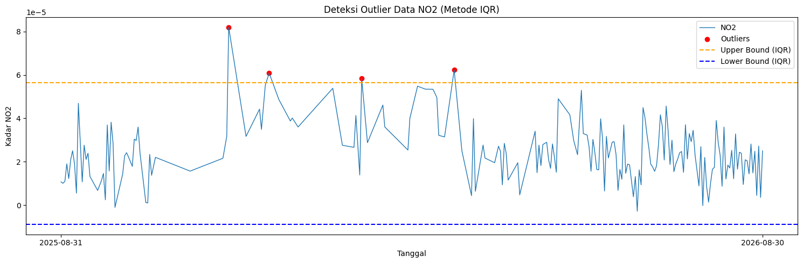
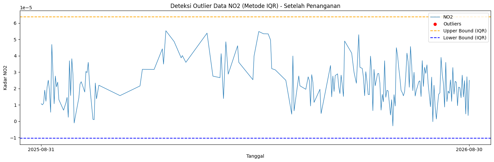

Preprocessing dan Ekstraksi Fitur#
Preprocessing: Penanganan Outliers dan Interpolasi#
Pada tahap Data Understanding, kita telah mengidentifikasi adanya missing values dan outliers. Untuk menangani masalah ini dan mempersiapkan data agar bisa diekstrak fiturnya secara berkesinambungan, kita menerapkan pembersihan data menggunakan metode Rentang Interkuartil (IQR) dan mengisi kekosongan data menggunakan interpolasi linier.
Deteksi dan Visualisasi Outlier (Metode IQR)#
Metode Interquartile Range (IQR) digunakan untuk mengidentifikasi nilai-nilai yang menyimpang atau berada di luar batas kewajaran. Data polutan yang nilainya lebih rendah dari lower bound atau lebih tinggi dari upper bound diklasifikasikan sebagai outlier.
import pandas as pd
import numpy as np
import matplotlib.pyplot as plt
df = pd.read_csv("./source/polutan/NO2_Kwanyar_timeseries_terkini.csv")
df['date'] = pd.to_datetime(df['date'])
df = df.sort_values('date').reset_index(drop=True)
# Hitung IQR
Q1 = df['NO2'].quantile(0.25)
Q3 = df['NO2'].quantile(0.75)
IQR = Q3 - Q1
lower_bound = Q1 - 1.5 * IQR
upper_bound = Q3 + 1.5 * IQR
# Filter outlier
outliers_iqr = df[(df['NO2'] < lower_bound) | (df['NO2'] > upper_bound)]
print("Jumlah Outlier (IQR):", len(outliers_iqr))
print(outliers_iqr[['date', 'NO2']].head())
Jumlah Outlier (IQR): 4
date NO2
41 2025-11-26 0.000082
46 2025-12-17 0.000061
56 2026-02-03 0.000058
69 2026-03-23 0.000062
Visualisasi batas ambang IQR terhadap distribusi data untuk melihat outlier secara lebih jelas:
plt.figure(figsize=(15,5))
plt.plot(df['date'], df['NO2'], label="NO2", linewidth=1)
plt.scatter(outliers_iqr['date'], outliers_iqr['NO2'],
color='red', marker='o', label="Outliers")
plt.axhline(upper_bound, color='orange', linestyle='dashed', label="Upper Bound (IQR)")
plt.axhline(lower_bound, color='blue', linestyle='dashed', label="Lower Bound (IQR)")
plt.title("Deteksi Outlier Data NO2 (Metode IQR)")
plt.xlabel("Tanggal")
plt.ylabel("Kadar NO2")
plt.legend()
plt.tight_layout()
plt.xticks(
ticks=[df['date'].iloc[0], df['date'].iloc[-1]],
labels=[df['date'].iloc[0].strftime('%Y-%m-%d'),
df['date'].iloc[-1].strftime('%Y-%m-%d')]
)
plt.show()

Penanganan Outlier, Melengkapi Tanggal, dan Interpolasi Data#
Setelah mendeteksi keberadaan outlier, langkah selanjutnya adalah menandainya sebagai nilai kosong (NaN). Karena pada data deret waktu terdapat banyak tanggal yang terlewat, kita melengkapi rentang waktunya (dari tanggal terawal hingga terakhir). Kemudian, metode interpolasi linier diterapkan pada keseluruhan dataset untuk mengisi nilai kosong (NaN) tersebut. Di akhir proses, teknik backward fill (bfill) serta forward fill (ffill) dimanfaatkan guna mengatasi nilai kosong pada bagian pinggir atau awalan dan akhiran rangkaian data yang tidak bisa diinterpolasi linier.
# Tandai outlier menjadi NaN
df['NO2_cleaned'] = df['NO2'].mask(
(df['NO2'] < lower_bound) | (df['NO2'] > upper_bound)
)
# Memasukkan data ke dalam rentang tanggal yang lengkap
df = df.set_index('date')
rentang_tanggal_lengkap = pd.date_range(start=df.index.min(), end=df.index.max(), freq='D')
df_lengkap = df.reindex(rentang_tanggal_lengkap)
# Lakukan interpolasi linier pada NaN yang sudah dibuat (dari outlier & reindex)
df_lengkap['NO2_filled'] = df_lengkap['NO2_cleaned'].interpolate(method='linear')
df_lengkap['NO2_filled'] = df_lengkap['NO2_filled'].bfill().ffill()
# Kembalikan index menjadi kolom
df_lengkap.index.name = 'date'
df_lengkap.reset_index(inplace=True)
# Simpan data yang telah dibersihkan dan diinterpolasi ke file CSV baru
df_no2_Kwanyar = pd.DataFrame({
"date": df_lengkap['date'],
"NO2": df_lengkap['NO2_filled']
})
df_no2_Kwanyar.to_csv("./source/polutan/NO2_Kwanyar_filled.csv", index=False)
Grafik setelah penanganan Outlier dan Penambahan Tanggal
import pandas as pd
import numpy as np
import matplotlib.pyplot as plt
df = pd.read_csv("./source/polutan/NO2_Kwanyar_filled.csv")
df['date'] = pd.to_datetime(df['date'])
df = df.sort_values('date').reset_index(drop=True)
# Hitung IQR
Q1 = df['NO2'].quantile(0.25)
Q3 = df['NO2'].quantile(0.75)
IQR = Q3 - Q1
lower_bound = Q1 - 1.5 * IQR
upper_bound = Q3 + 1.5 * IQR
# Filter outlier
outliers_iqr = df[(df['NO2'] < lower_bound) | (df['NO2'] > upper_bound)]
print("Jumlah Outlier (IQR):", len(outliers_iqr))
print(outliers_iqr[['date', 'NO2']].head())
Jumlah Outlier (IQR): 0
Empty DataFrame
Columns: [date, NO2]
Index: []
Visualisasi batas ambang IQR terhadap distribusi data untuk melihat outlier secara lebih jelas:
plt.figure(figsize=(15,5))
plt.plot(df['date'], df['NO2'], label="NO2", linewidth=1)
plt.scatter(outliers_iqr['date'], outliers_iqr['NO2'],
color='red', marker='o', label="Outliers")
plt.axhline(upper_bound, color='orange', linestyle='dashed', label="Upper Bound (IQR)")
plt.axhline(lower_bound, color='blue', linestyle='dashed', label="Lower Bound (IQR)")
plt.title("Deteksi Outlier Data NO2 (Metode IQR) - Setelah Penanganan")
plt.xlabel("Tanggal")
plt.ylabel("Kadar NO2")
plt.legend()
plt.tight_layout()
plt.xticks(
ticks=[df['date'].iloc[0], df['date'].iloc[-1]],
labels=[df['date'].iloc[0].strftime('%Y-%m-%d'),
df['date'].iloc[-1].strftime('%Y-%m-%d')]
)
plt.show()

Ekstraksi Fitur Deret Waktu (Time Series)#
Dengan data deret waktu polutan udara yang konsisten (tanpa tanggal hilang dan tanpa outlier), kita dapat melangkah ke ekstraksi berbagai fitur statistik, temporal, maupun spektral. Fitur-fitur ini sangat berguna sebagai parameter input yang merepresentasikan karakteristik trend harian polutan ke dalam model machine learning maupun deep learning.
Kita akan memanfaatkan modul pustaka Python bernama tsfel (Time Series Feature Extraction Library) guna mempermudah proses komputasi serta standarisasi ragam tipe fitur.
Berikut adalah sintaks kode implementasi untuk mengekstraksi sebanyak 68 fitur otomatis pada deret data NO₂ (dan berlaku perlakuan serupa untuk unsur polutan lainnya):
import pandas as pd
import numpy as np
import inspect
import tsfel.feature_extraction.features as tsfel_features
# ---------- 1. Muat data yang sudah dibersihkan ----------
df = pd.read_csv('./source/polutan/NO2_Kwanyar_filled.csv')
df['date'] = pd.to_datetime(df['date'])
df = df.sort_values('date').reset_index(drop=True)
target_pollutant = 'NO2'
# Pastikan data di-casting ke tipe numerik.
df[target_pollutant] = pd.to_numeric(df[target_pollutant], errors='coerce')
# Interpolasi terakhir untuk berjaga-jaga apabila terdapat sisa format nan
df_clean = df.set_index('date').interpolate(method='time').ffill().bfill()
fs = 1
signal_1d = df_clean[target_pollutant].astype(float).values
# ---------- 2. Inisiasi 68 Daftar Fitur TSFEL ----------
FEATURE_LIST = """abs_energy auc autocorr average_power calc_centroid calc_max calc_mean
calc_median calc_min calc_std calc_var dfa distance ecdf ecdf_percentile ecdf_percentile_count
ecdf_slope entropy fundamental_frequency higuchi_fractal_dimension hist_mode human_range_energy
hurst_exponent interq_range kurtosis lempel_ziv lpcc max_frequency max_power_spectrum
maximum_fractal_length mean_abs_deviation mean_abs_diff mean_diff median_abs_deviation
median_abs_diff median_diff median_frequency mfcc mse negative_turning neighbourhood_peaks
petrosian_fractal_dimension pk_pk_distance positive_turning power_bandwidth rms skewness slope
spectral_centroid spectral_decrease spectral_distance spectral_entropy spectral_kurtosis
spectral_positive_turning spectral_roll_off spectral_roll_on spectral_skewness spectral_slope
spectral_spread spectral_variation spectrogram_mean_coeff sum_abs_diff wavelet_abs_mean
wavelet_energy wavelet_entropy wavelet_std wavelet_var zero_cross""".split()
print("Jumlah fitur yang diminta:", len(FEATURE_LIST))
# ---------- 3. Fungsi ekstraksi dan penyeragaman output ----------
# Fungsi bantuan (helper) merubah output multivariat TSFEL menjadi float tunggal/skalar
def to_scalar(result):
if isinstance(result, dict) and "values" in result:
result = result["values"]
if isinstance(result, (list, tuple, np.ndarray)):
arr = np.asarray(result, dtype=float)
return float(np.nanmean(arr))
return float(result)
# Fungsi map pemanggilan fungsi TSFEL
def extract_one(fn_name, signal, fs):
fn = getattr(tsfel_features, fn_name)
params = inspect.signature(fn).parameters
if "fs" in params:
result = fn(signal, fs)
else:
result = fn(signal)
return to_scalar(result)
# Lakukan ekstraksi iteratif pada fitur
row = {}
for fn_name in FEATURE_LIST:
row[fn_name] = extract_one(fn_name, signal_1d, fs)
extracted_features_final = pd.DataFrame([row])
print(f"Berhasil! Jumlah fitur yang diekstrak pada {target_pollutant}: {extracted_features_final.shape[1]}")
# Export hasil ke file CSV
extracted_features_final.to_csv(f'./source/polutan/{target_pollutant}_Bangkalan_TSFEL.csv', index=False)
Data hasil ekstraksi fitur menggunakan TSFEL
| abs_energy | auc | autocorr | average_power | calc_centroid | calc_max | calc_mean | calc_median | calc_min | calc_std | ... | spectral_spread | spectral_variation | spectrogram_mean_coeff | sum_abs_diff | wavelet_abs_mean | wavelet_energy | wavelet_entropy | wavelet_std | wavelet_var | zero_cross | |
|---|---|---|---|---|---|---|---|---|---|---|---|---|---|---|---|---|---|---|---|---|---|
| 0 | 3.284430e-07 | 0.009842 | 13.0 | 9.023159e-10 | 177.003494 | 0.000055 | 0.000027 | 0.000026 | -0.000003 | 0.000013 | ... | 0.159019 | 0.273774 | 2.434023e-10 | 0.002222 | 0.000001 | 0.000016 | 2.116438 | 0.000016 | 3.009450e-10 | 6.0 |
1 rows × 68 columns
Penjelasan Domain TSFEL#
Pustaka TSFEL membagi fitur deret waktu menjadi tiga domain utama untuk menganalisis data dari berbagai perspektif: Statistik (Statistical), Waktu (Temporal), dan Frekuensi (Spectral). Berikut adalah penjelasan untuk setiap domain beserta fitur-fitur yang terdapat di dalamnya:
1. Domain Statistical#
Domain statistik mengekstrak metrik kuantitatif dan karakteristik sebaran serta bentuk distribusi dari sinyal deret waktu tanpa mempertimbangkan urutan kemunculan waktunya. Fitur-fitur ini sangat baik untuk mengetahui rentang, kecenderungan memusat, dan variasi data.
calc_max,calc_min,calc_mean,calc_median: Nilai maksimum, minimum, rata-rata, dan median dari deret waktu polutan.calc_std,calc_var: Standar deviasi dan varians yang mengukur tingkat penyebaran atau fluktuasi sinyal.ecdf,ecdf_percentile,ecdf_percentile_count,ecdf_slope: Metrik berdasarkan Empirical Cumulative Distribution Function (ECDF) yang menggambarkan distribusi probabilitas kumulatif dari sinyal.hist_mode: Nilai kemunculan terbanyak (modus) dalam histogram data.interq_range: Interquartile Range (IQR), mengukur rentang data di antara kuartil atas (Q3) dan kuartil bawah (Q1).kurtosis: Tingkat kelancipan (peakedness) dari distribusi data polutan dibandingkan dengan distribusi normal.skewness: Ukuran ketidaksimetrisan (kemiringan) dari distribusi data polutan.mean_abs_deviation,median_abs_deviation: Rata-rata dan median deviasi absolut yang memberikan ukuran kekokohan (robustness) sebaran data dari rata-rata atau mediannya.rms: Root Mean Square (RMS), ukuran besaran rata-rata kuadrat dari sinyal, mencerminkan energi rata-rata data.
2. Domain Temporal#
Domain temporal mengevaluasi sinyal dari segi urutan waktunya. Fitur ini sangat krusial untuk menemukan siklus, tren linier, kompleksitas atau tingkat kekacauan (chaos) pada data, serta autokorelasi dari suatu titik waktu ke waktu lainnya.
abs_energy: Total energi absolut yang dikandung oleh sinyal seiring berjalannya waktu.auc: Area Under the Curve (AUC), total luas area di bawah kurva sinyal polutan.autocorr: Autokorelasi, seberapa kuat sinyal polutan saat ini berkorelasi dengan waktu-waktu sebelumnya.average_power: Rata-rata kekuatan sinyal dalam domain waktu.calc_centroid: Titik pusat (centroid) sinyal di sepanjang sumbu waktu.dfa: Detrended Fluctuation Analysis (DFA), untuk mengukur dependensi jangka panjang atau fraktalitas sinyal.distance: Total jarak lintasan pergerakan titik data dari awal hingga akhir.entropy: Skalar entropi yang mengukur tingkat ketidakteraturan, ketidakpastian, atau kerumitan pada deret waktu.higuchi_fractal_dimension,petrosian_fractal_dimension: Dimensi fraktal yang digunakan untuk menilai seberapa bergerigi atau kompleks sinyal secara matematis.hurst_exponent: Mengevaluasi apakah deret waktu memiliki tren memori jangka panjang (misalnya, jika polusi naik hari ini, apakah besok cenderung naik juga).lempel_ziv: Tingkat kompresibilitas atau kekayaan pola pada sinyal (kompleksitas deterministik).maximum_fractal_length: Panjang maksimal fraktal dari skala waktu yang bervariasi.mean_abs_diff,mean_diff,median_abs_diff,median_diff: Rata-rata dan median dari selisih atau selisih absolut antar data yang berurutan. Menggambarkan laju perubahan data harian.mse: Mean Squared Error, parameter rata-rata kesalahan kuadrat dari sinyal terkait model rata-ratanya.negative_turning,positive_turning: Jumlah titik belok di mana tren data berubah dari naik ke turun (negatif) dan turun ke naik (positif).neighbourhood_peaks: Memonitor titik-titik puncak di suatu lingkup observasi berdekatan.pk_pk_distance: Jarak dari lembah terendah ke puncak tertinggi (Peak-to-Peak).slope: Kemiringan tren data linear secara keseluruhan (naik/turun).sum_abs_diff: Total akumulasi jumlah perbedaan absolut dari satu titik waktu ke waktu berikutnya.zero_cross: Seberapa sering sinyal menyilang nilai nol (atau memotong garis baseline).
3. Domain Spectral#
Domain spektral memproses deret waktu dengan mentransformasikannya ke dalam ranah frekuensi (menggunakan algoritma spektrum fourier atau dekomposisi wavelet). Fitur pada domain ini sangat bagus untuk menganalisis sifat periodik dan kepadatan osilasi gelombang yang tersembunyi.
fundamental_frequency: Frekuensi dasar yang paling menonjol dalam sinyal, menandakan siklus polutan terkuat.max_frequency: Frekuensi tertinggi yang dicatat pada analisis spektrum.median_frequency: Frekuensi median pembagi tengah total daya pada spektrum sinyal polutan.human_range_energy: Energi sinyal dalam rentang frekuensi tertentu (lebih spesifik untuk pergerakan frekuensi pada rentang manusia).lpcc,mfcc: Linear Prediction Cepstral Coefficients dan Mel-Frequency Cepstral Coefficients, representasi padat terkait spektrum sinyal yang biasa digunakan dalam pemrosesan suara, berguna memetakan tekstur frekuensi polutan.max_power_spectrum: Nilai daya (energi) tertinggi pada frekuensi dominan dalam seluruh pita spektrum.power_bandwidth: Lebar pita frekuensi tempat sebagian besar energi sinyal difokuskan.spectral_centroid: Titik berat frekuensi, mengindikasikan apakah energi spektrum lebih condong ke frekuensi tinggi atau rendah.spectral_decrease,spectral_slope: Pengukuran tren seberapa curam/cepat daya spektrum menurun pada frekuensi tinggi.spectral_distance: Ukuran jarak antara profil frekuensi berdekatan (kestabilan spektrum).spectral_entropy: Entropi spektral, seberapa datar atau bervariasi distribusi energi pada keseluruhan pita frekuensi (menandakan keteraturan sinyal siklik).spectral_kurtosis,spectral_skewness: Parameter bentuk untuk kurva densitas spektrum (menilai kelancipan dan kemiringan pita spektral).spectral_positive_turning: Jumlah belokan (titik naik) pada plot kepadatan spektral frekuensi.spectral_roll_off,spectral_roll_on: Titik frekuensi di mana presentase mayoritas daya (misal 95%) telah terkonsentrasi; berguna untuk penyaringan sinyal bising/noise.spectral_spread,spectral_variation: Penyebaran atau lebar pita variasi spektrum di sekeliling centroid.spectrogram_mean_coeff: Rata-rata tingkat magnitudo atau koefisien yang diambil dari keseluruhan hasil matriks spektrogram waktu-frekuensi.wavelet_abs_mean,wavelet_energy,wavelet_entropy,wavelet_std,wavelet_var: Parameter dari hasil Transformasi Wavelet (rata-rata mutlak, energi, entropi, standar deviasi, dan varians koefisien wavelet), berguna untuk mengungkap struktur waktu dan frekuensi secara simultan yang dapat berubah-ubah.